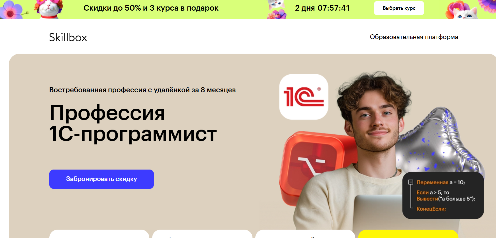
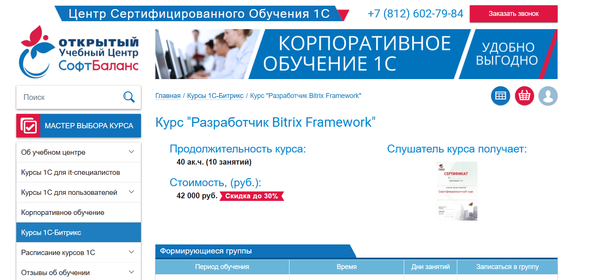

Курс «Bitrix-разработчик с нуля» — Нетология

Ссылка на курс: https://netology.ru/programs/bitrix
Цена: 110 000 рублей без скидок
Продолжительность обучения: 10 месяцев
Удостоверение после завершения: Диплом о профессиональной переподготовке
Помощь в трудоустройстве: Мы окажем вам поддержку в поиске работы
Что вы получите
- Доступ к карьерным программам Центра развития карьеры
- Содействие в составлении качественного резюме
- Навыки уверенного представления собственных достоинств
- Информация о поиске трудовой деятельности
- Знакомство с платформами для поиска вакансий и доступ к проектной бирже
- Подготовка к собеседованиям
- Умение говорить о себе уверенно и адекватно реагировать на вопросы
- Формирование портфолио
- Оформление портфолио так, чтобы оно подчеркнуло ваши навыки
- Навыки самостоятельной работы
- Доступ к данным о первых клиентах и возможности организации связи с ними
Для кого полезен данный курс
Независимо от вашего опыта или наличия образования, вы сможете освоить новую специальность с основ и постепенно научитесь создавать веб-сайты под руководством опытных наставников.
Чему вы научитесь
В процессе обучения вы создадите:
• Кроссбраузерную верстку блога с использованием HTML и CSS
• Игра «Крестики-нолики» на JavaScript
• Информационный ресурс на платформе 1С-Битрикс
• Интернет-магазин спортивного инвентаря на базе 1С-Битрикс
Структура курса
Занятия проходят дважды в неделю с 19:00 до 21:00. Вы выполните более 100 практических заданий, сделаете три проектные работы и успешно защитите дипломную.
Часть 1. Основы веб-разработки на JavaScript и PHP
Верстка сайтов с помощью HTML и CSS
Вы научитесь создавать веб-сайты на HTML и CSS и сможете вносить изменения в уже существующие дизайны. К окончанию модуля вы сами сможете спроектировать одностраничный сайт.
12 часов теории
24 часа практики
Теги для создания контента страниц
Структурные элементы страниц
Формы и их компоненты
CSS-селекторы
Определение контраста элементов
Блочная модель
Позиционирование элементов
Форматирование текста
Декоративное оформление элементов
Статусы интерактивных элементов
Кроссбраузерная верстка блога с HTML и CSS
Курсовая работа
Вы разработаете макет личного блога с кроссбраузерной версткой на HTML и CSS.
24 часа практики
Основы программирования на JavaScript
Вы освоите базовые концепции кодирования, напишете свои первые программы и создадите ряд простых проектов.
Практика будет проходить на JavaScript, что позволит вам лучше понять работу клиентских приложений.
Вы изучите различные языки программирования и сможете выбрать тот, который подойдет именно вам в зависимости от ваших целей и стремлений.
В финальном проекте вы создадите онлайн-версию игры, аналогичной «Монополии».
12 часов теории
24 часа практики
Алгоритмы
Переменные, строки, числа
Логические и математические операции
Условные конструкции
Выбор алгоритмов
Обработка ошибок в коде
Массивы
Циклы
Функции и подпрограммы
Объекты
Синхронные и асинхронные алгоритмы
Игра «Крестики-нолики» на JavaScript
Курсовая работа
На данном этапе вам необходимо создать игру «Крестики-нолики». Фронтенд-разработчик предоставляет визуальные элементы, ваша задача — программирование логики игры, позволящей игрокам поочередно выставлять свои символы.
24 часа практики
Система управления версиями Git
Вы освоите использование Git и GitHub, сможете загружать свои домашние задания и создать собственное портфолио — работодатели часто требуют примеры кода на GitHub.
4 часа теории
9 часов практики
Цели систем контроля версий
Основные операции: коммиты, изменения и восстановление, анализ и просмотр истории
Работа с GitHub
Разветвление, слияние и разрешение конфликтов
Совместная работа
Основы PHP
Вы начнете изучение языка PHP. В рамках курса познакомитесь с основными конструкциями и будете работать с функциями и объектами.
13 часов теории
32 часа практики
Введение в PHP и PhpStorm
Консольные приложения на PHP
Основные операторы и функции
Функции в PHP
Структуры данных в PHP
Обработка запросов и сессии
Работа с файлами и HTML-формами
Размещение приложений на хостинге
Ассортимент веб-приложений
Вы изучите, как взаимодействуют фронтенд и бэкенд. Исследуете популярные форматы и методы передачи данных, а также API современных HTTP-серверов.
7 часов теории
21 час практики
HTTP и актуальные особенности веба. Форматы и методы передачи данных
Библиотека JQuery
Библиотека Bitrix JS
REST API в Bitrix Framework
Форматы обмена данными JSON и XML
Работа с MySQL
Введение в профессию Bitrix-разработчика
Финальная работа
Промежуточный проект — интернет-магазин спортивного снаряжения
Вы создадите интернет-магазин спортивного оборудования на платформе 1С-Битрикс.
Ваша задача — разработать как клиентскую, так и административную части проекта.
На финальный проект отводится один месяц.
Административная часть включает:
• Управление ассортиментом
• Обработка заказов
• Управление новостями
• Создание текстовых страниц
• Настройка платёжных систем
• Организация доставки
Клиентская часть включает:
• Текстовые страницы
• Навигационное меню
• Каталог товаров
• Раздел новостей
• Корзина покупок
• Оформление заказов
Ключевые навыки
- Создание верстки сайтов с помощью HTML и CSS
- Работа с фронтенд-частью приложения на JavaScript
- Работа с бэкенд-частью приложения на PHP
- Управление версиями кода через Git и GitHub
- Разработка сайтов на базе Bitrix Framework
- Администрирование сайтов на платформе 1С-Битрикс
- Работа с API сторонних сервисов
- Опыт работы с новым ядром платформы Bitrix D7
Профессия 1С-разработчик в Skillbox

Сайт: https://skillbox.ru/course/profession-1c/
Стоимость: 3956 рублей в месяц с рассрочкой на 22 месяца
Продолжительность курса: 6 месяцев
Удостоверение по окончании: свидетельство от компании «1С»
Помощь в трудоустройстве: да
Станьте специалистом в системе «1С:Предприятие» вместе с наставником и начните зарабатывать, даже если у вас нет опыта в программировании. После завершения курса мы поможем вам с поиском подходящей работы.
Для кого этот курс будет полезен
Новичкам
Вы получите практические навыки в программировании и работе с конфигурациями в «1С:Предприятие 8», подготовившись к экзамену «1С:Профессионал», сможете претендовать на вакансию программиста 1С.
Пользователям «1С»
Вы сможете адаптировать конфигурации под нужды клиентов. Научитесь составлять технические задания, создавать отчеты, обрабатывать данные и разрабатывать функции.
Опытным программистам
Вы получите представление о оперативном учете, научитесь взаимодействовать с учетными регистрами и расчетами, сможете корректировать типовые настройки 1С.
Сертификат компании «1С»
Курс сертифицирован разработчиками «1С:Предприятие».
По окончании обучения вам будут вручены два документа: сертификат Skillbox и свидетельство от компании 1С, которые помогут вам выделиться среди кандидатов и ускорить поиск работы в крупных фирмах.
Чему вы научитесь в ходе курса
Автоматизация бизнес-процессов
Разработка учетных систем
Создание и настройка функционала
Подготовка отчетов для руководства
Проектирование баз данных
Интеграция 1С с другими приложениями
Создание собственных конфигураций
Гарантируем трудоустройство или возврат средств
Вы получите индивидуальное сопровождение от специалиста по найму. Совместно вы подготовите резюме, соберете портфолио и разработаете карьерный план для быстрого поиска работы. Вам будут доступны интересные вакансии с преимуществом перед другими кандидатами.
Если вам не удастся найти подходящую работу, мы вернем деньги за курс*.
Структура обучения
Курс включает три модуля, которые дадут вам конкурентные преимущества и подготовят к сертификации.
29 различных тем
57 видеоматериалов
Путь от новичка до профессионала в сфере 1С-разработки
Мини-курс «Язык SQL-запросов»
Курс «Общие знания программиста»
Преподаватели
Александр Архипов
Эксперт по внедрению из крупной компании-партнера 1С
Денис Слепцов
Руководитель отдела программного обеспечения
Александр Маковеев
Специалист по внедрению
Курс «Создание сайта на битрикс» — Академия IT

Сайт: https://academiait.ru/course/sozdanie-sajta-na-bitriks/
Стоимость: Бесплатно
Продолжительность курса: 14 занятий
Удостоверение по окончании обучения: не предусмотрено
Поддержка в трудоустройстве: отсутствует
Курс создан для всех, кто хочет ознакомиться с профессией.
Преимущества курса
Этот онлайн-курс «Создание сайта на Битрикс» предлагается без финансовых затрат.
После его завершения вы сделаете важный шаг к более глубокому обучению и сможете лучше осознать свои интересы!
Кроме того, у вас есть возможность ознакомиться с множеством других увлекательных курсов, доступных для бесплатного прохождения. Вам лишь нужно пройти регистрацию и получать новые знания без каких-либо затрат.
Вы также сможете найти и безвозмездно загрузить необходимые материалы, включая книги, методические руководство, инструкции и презентации.
Структура курса
Урок 1: Введение. Создание веб-сайта на платформе Битрикс
Урок 2: Верстка шаблона с использованием HTML и CSS. Построение сайта на Битриксе
Урок 4: Разработка шаблона для Битрикс с помощью HTML/CSS
Урок 3: Установка Битрикс на локальный компьютер (виртуальный сервер Битрикс)
Урок 5: Конструирование меню в Битрикс
Урок 6: Создание инфоблоков в Битрикс и их отображение на веб-странице
Урок 7: Создание модулей для интеграции в Битрикс
Урок 8: Разработка слайдера в Битрикс с использованием инфоблоков и компонента «новости»
Урок 9: Совершенствование дизайна сайта на платформе Битрикс
Урок 10: Организация товарного каталога с помощью Битрикса
Урок 11: Перенос сайта Битрикс на хостинг, интеграция функций поиска и регистрации пользователей
Урок 12: Верстка компонента «каталог» в Битрикс
Урок 13: Анонсирование каталога и основы SEO для Битрикса
Урок 14: Заключительные советы и аспекты работы с Яндексом
Курс «1С-Битрикс» — Факт.Школа

Веб-сайт: https://school.fact.digital/
Стоимость: 18 000 рублей
Длительность: 3 месяца
Документ по окончании: информация отсутствует
Помощь в трудоустройстве: выпускники проходят подготовку к трудоустройству в ведущей IT-компании России — «Факт».
Кому будет полезен этот курс
Для студентов, изучающих программирование
Для тех, кто учится веб-разработке самостоятельно
Для учащихся технических специальностей, желающих перейти к программированию
Для IT-специалистов, стремящихся освоить веб-разработку
Чему вы научитесь
Практическое обучение вместо теории
Совместная работа над реальными проектами
Сдача экзамена и получение профессиональных навыков
Рабочая среда с выдающимися веб-разработчиками страны
Структура курса
Изучение HTML и CSS
Основы HTML
Изучение CSS
Разметка текстового контента
Работа с гиперссылками и изображениями
Работа с таблицами данных
Создание стилей для HTML-форм
Изучение PHP
Начальный уровень изучения PHP
Расширенные возможности PHP
Работа с пользовательскими данными в PHP
PHP и MySQL
Объектно-ориентированное программирование на PHP
Освоение платформы 1С-Битрикс
Введение в CMS и функции 1С-Битрикс
Способы установки платформы 1С-Битрикс и особенности установки на виртуальную машину
Структура Bitrix Framework и использование административного интерфейса
Верстка на платформе 1С-Битрикс и организация участков сайта
Функции, действующие при загрузке страниц
Интеграция верстки в шаблоны 1С-Битрикс и принципы использования общих шаблонов
Сравнение структуры HTML-шаблона и стандартной верстки 1С-Битрикс
Компоненты в 1С-Битрикс: их типы и назначения
Работа с меню в 1С-Битрикс
Права пользователей и процесс авторизации
Работа с картами в 1С-Битрикс
Создание форм обратной связи в 1С-Битрикс и работа с информационными блоками
Управление динамическими данными и механизм кэширования в 1С-Битрикс
Комплексные компоненты в 1С-Битрикс и технологии их использования
Поиск на веб-сайтах и работа в 1С-Битрикс
Дополнительные возможности настройки функционала платформы и работа с контентом
Разбор распространенных ошибок на итоговом экзамене по 1С-Битрикс
Подготовка к финальному экзамену по 1С-Битрикс
Итог курса: гарантия трудоустройства в компанию «Факт» после успешного завершения и сдачи независимого экзамена от 1С-Битрикс.
Курс «1С – Битрикс. Быстрый старт разработчика» — Центр компьютерного обучения «Специалист» при МГТУ им.Н.Э.Баумана

Веб-сайт: https://www.specialist.ru/course/1cbitraz
Стоимость:
Для физических лиц:
Очное обучение – 19 990 рублей
Онлайн обучение – 19 950 рублей
Обучение с рассрочкой – от 1 067 рублей в месяц
Индивидуальные занятия – 48 000 рублей *
Для компаний:
Очное обучение – 24 490 рублей
Онлайн обучение – 24 490 рублей
Продолжительность: 24 академических часа + 12 дополнительных бесплатно
Документ об окончании курса: сертификат
Возможность трудоустройства: отсутствует
Для кого этот курс подходит
Требуемая подготовка для студентов:
Завершенный курс по HTML и CSS, уровень 1.
Создание сайтов на HTML 5 и CSS 3 или аналогичное образование.
Успешное окончание курса по PHP, часть 1.
Базовые знания PHP8 или эквивалент.
Рекомендуемая (но не обязательная) подготовка: окончание курса «1С – Битрикс: Управление сайтом – администрирование» или аналогичная квалификация.
Чему вы научитесь
Настройка сайтов для проектов на платформе 1С-Битрикс
Работа с инфоблоками и API
Создание собственных модулей
Установка и настройка компонентов
Разработка и настройка полноценного интернет-магазина
Структура курса
Модуль 1. Основы работы с Битрикс. Установка системы. Понимание структуры сайта (4 академических часа)
Формирование представления о системе «1С-Битрикс»,
Установка и базовая настройка системы,
Создание нескольких сайтов под одной лицензией,
Структура системы и принципы управления веб-сайтом,
Понимание структуры сайта, организация веб-структуры, методы обмена данными с сервером и управление адресами.
Модуль 2. Инфоблоки. Работа с API платформы «1С-Битрикс» (4 академических часа)
Понимание инфоблока,
Свойства инфоблока и его секций,
Импорт-экспорт данных инфоблока.
Введение в API системы «1С-Битрикс»,
Работа с базовыми функциями API,
События и работа с ними,
Индивидуальные настройки форм редактирования элементов.
Модуль 3. Архитектура продукта. Структура сайта. Шаблоны (4 академических часа)
Концепция шаблона веб-сайта,
Ключевые элементы шаблона сайта,
Архитектурные особенности продукта,
Структура файлов,
Права доступа.
Модуль 4. Технологии. Автоматизация стандартных процессов разработки (4 академических часа)
Принципы и методы отладки веб-сайтов на платформе «1С-Битрикс»
Что такое мастера, создание и применение мастера
Стандартные задачи веб-разработчика и их автоматизация,
Понятие об агентах, обработка событий, кэширование.
Модуль 5. Модули и компоненты (4 академических часа)
Глубокое понимание структуры файлов,
Взаимосвязь между модулями и компонентами, принципы их организации,
Настройки и модификация стандартных компонентов, создание собственных.
Модуль 6. Разработка интернет-магазина (4 академических часа)
Занятия с преподавателем: 24 академических часа + 12 часов бесплатно*
* В рамках курса дополнительно предоставляются часы для самостоятельного выполнения заданий в компьютерных классах. Вы сможете закрепить полученные знания, выполнить домашние задания и проконсультироваться с преподавателями. Дополнительные часы организуются в дни занятий по предварительной записи с администратором.
Для утренних групп с 8:30 до 10:00
Для дневных групп – по 1 академическому часу до и после занятий (13:15-14:00, 17:10-17:55)
По окончании обучения проводится итоговая аттестация: тестирование на последнем уроке или оценка по практическим заданиям, выполненным во время обучения.
Результаты обучения
Процесс создания веб-сайта на платформе 1С-Битрикс можно сравнить с построением конструкции из разных модулей.
Под внимательным руководством инструктора вы получите практические навыки установки программного обеспечения, познакомитесь с инструментами для разработки веб-сайтов на 1С-Битрикс и научитесь последовательно настраивать модули, создавая свой интернет-магазин с нуля.
Курс «Битрикс» — irs.academy

Веб-сайт: https://irs.academy/kurs_po_bitriks
Стоимость: 32 000 рублей
Продолжительность: 16 часов, 8 уроков
Документ об окончании: Сертификат специалиста по Битрикс
После завершения вы получите сертификат, подтверждающий прохождение 8 уроков онлайн-курса по Битрикс.
Сертификат будет выслан в электронном виде; по запросу оригинал будет отправлен Почтой России.
Для кого этот курс предназначен
Для начинающих
Если вы никогда ранее не проходили онлайн-курсы по 1С-Битрикс и хотите изучить работу с этой системой, курс, разработанный преподавателем академии HEDU, идеально подойдет вам, так как он доступен для новичков.
Для владельцев бизнеса
Если вам нужно лучше понимать функционал вашего сайта и контролировать работу специалистов или заниматься чем-то самостоятельно, онлайн-курс по Битрикс станет отличной основой для ваших знаний.
Для контент-менеджеров
Если ваша задача заключается в заполнении веб-порталов, и у вас появились вопросы по использованию платформы Битрикс, мы рекомендуем пройти поэтапный курс, чтобы повысить свою продуктивность.
Для администраторов сайтов
Если вы хотите обновить информацию на ваших сайтах и восполнить недостающие знания, тогда курс по 1С-Битрикс станет для вас очень полезным.
Для желающих подрабатывать
Тем, кто желает увеличить свой доход в свободное время, рекомендуем пройти онлайн-курс по освоению Битрикса с нуля от академии HEDU и приобрести полезные знания.
Для фрилансеров
Если вы хотите развить навыки, которые позволят вам зарабатывать на удаленке, обратите внимание на курс по Битриксу с нуля и начинайте выполнять первые заказы.
Что вас ожидает на курсе
- Изучение основ создания веб-сайтов на платформе 1С-Битрикс
- Способность самостоятельно устанавливать и настраивать систему
- Навыки редактирования страниц сайтов
- Доступ к обучающим видео о работе с 1С-Битрикс
- Сертификат по окончанию обучения
- Знания о безопасности сайта
Тематика курса
Урок № 1 — Запуск работы с CMS 1С-Битрикс
На первом занятии мы начнем с установки системы.
Изучение административной панели и функций визуального редактора
В этой части урока мы разберем функции администрирования и начнем работу с визуальным редактором. Поймем, для чего нужны различные команды в панели управления.
Занятие 2 — Визуальный редактор
На втором уроке мы углубимся в возможности визуального редактора и его преимущества для пользователей, также обсудим важность технической поддержки.
Занятие 3 — Формируем структуру
Третий урок будет посвящен работе со страницами. Мы научимся добавлять изображения и видео, а также создавать гиперссылки. Также рассмотрим структуру сайта и создание различных меню.
Занятие 4 — Значение информационных блоков
Четвертый урок затронет информацию как статического, так и динамического характера. Вы познакомитесь с различными видами инфоблоков и научитесь их создавать и управлять ими.
Занятие 5 — Знакомство с компонентами
На пятом занятии мы сосредоточимся на компонентах, их назначении, различиях между простыми и сложными компонентами, а также обсудим навигационные элементы.
Занятие 6 — Настройки и инструменты
Шестое занятие будет оформлено вокруг настройки прав доступа и групп пользователей. Кроме того, мы обсудим безопасность сайта, правильные методы хранения данных и резервного копирования. После этого урока вы сможете самостоятельно оптимизировать базу данных.
Занятие 7 — Дополнительные функции 1С-Битрикс
На седьмом уроке мы рассмотрим дополнительные сервисы, встроенные в 1С-Битрикс, такие как CDN и возможности композитного сайта.
Занятие 8 — Создание лендингов
Восьмое занятие будет посвящено платформе Сайт24, где вы научитесь создавать одностраничные сайты, а также обсудим нюансы готовых решений на маркетплейсе.
Результаты курса
- Вы освоите создание, управление и наполнения сайтов, что станет вам полезным для заработка.
- По завершении курса вы будете способны:
- Настраивать модули.
- Управлять системой через интерфейс.
- Наполнять портал фото, видео и текстами.
- Уверенно использовать инструменты системы.
- Контролировать доступ к ресурсам для пользователей.
- Создавать страницы, новые разделы и специфические веб-формы.
Курс «Битрикс» — Дело Системы

Ссылка на сайт: https://delosystems.ru/courses-bitrix/crm/
Стоимость:
для физических лиц: 16 000 руб.
для студентов: 12 900 руб.
для юридических лиц: 18 000 руб.
Длительность: 16 академических часов.
Сертификат по окончании курса: информации нет
Содействие в поиске работы: информации нет
Кому подходит курс
Если вы занимаетесь бизнесом, Bitrix CRM станет важным инструментом для вас. Все больше предпринимателей из разных областей осознают это. Курс по CRM — одно из самых популярных направлений в нашем обучении. Во время занятий вы узнаете, как увеличивать клиентскую базу и повышать объем продаж.
Группа компаний «Дело Системы» приглашает вас на обучение. Наши преподаватели — профессионалы с опытом, которые помогут вам быстро освоить основы работы с CRM и необходимыми навыками на курсе crm bitrix24.
Что вы освоите
Курс предназначен для новичков, не имеющих опыта работы с CMS 1С-Битрикс:
Управление сайтом. В рамках курса рассматриваются темы, связанные с наполнением и администрированием сайта, без погружения в программирование. Образовательный процесс подходит всем, кто хочет освоить работу с 1С-Битрикс.
Структура курса
- карточка CRM — полный доступ ко всей истории сделки, от первого обращения клиента до оценки работы ваших сотрудников;
- автоматизация продаж — звонки, письма, реклама — всё выполняется в автоматическом режиме;
- CRM-маркетинг — используйте готовые шаблоны или создайте собственные для анализа результатов рассылок;
- звонки из CRM — аренда телефонного номера или подключение собственной телефонии с записью разговоров на платформе;
- письма из CRM — возможность отправлять письма клиентам непосредственно из системы;
- бесплатный онлайн-чат — сообщения поступают в CRM автоматически, распределяясь между менеджерами;
- план продаж и отчётность — распределение целей между сотрудниками, контроль загрузки и анализ продаж;
- документы в CRM — создание актов, счетов и доверенностей при помощи шаблонов или использование готовых;
- CRM для услуг — владельцы и менеджеры, например, beauty-салонов и клиник могут вести расписание мастеров и отслеживать загрузку ресурсов;
- предложение услуг бронирования;
- мобильная CRM – возможность управлять продажами и оставаться на связи из любой точки мира!
- Бесплатное приложение для iPhone и Android.
Результаты обучения
- Использование данной CRM-системы охватывает практически все отделы компании.
- Бухгалтеры, менеджеры по работе с клиентами, маркетологи, руководители и владельцы бизнесов должны знать, как использовать эту систему в своей деятельности. Обучение по битрикс24 crm будет также полезно ИТ-специалистам, занимающимся внедрением и сопровождением приложения.
- Курс организован правильно и охватывает все аспекты работы с CRM, предоставляя навыки её практического применения. Это улучшит взаимодействие компании с клиентами и повысит уровень продаж. Занятия проводятся на реальных примерах из бизнеса, что делает их актуальными.
- Обратитесь к специалистам группы компаний «Дело Системы» и улучшите свои навыки работы с одной из самых распространенных систем для ведения бизнеса.
Курс «1С-Битрикс»

Сайт: https://dwstroy.ru/disc01/
Стоимость: 3 990 руб.
Длительность: курс состоит из 19 уроков общей продолжительностью 4 часа 08 минут.
Документ о прохождении курса: нет информации
Содействие в трудоустройстве: отсутствие информации
Кому будет интересен курс
Для успешного завершения курса необходимы базовые знания PHP, HTML, CSS, JS, а также сертификат от 1С-Битрикс «Администратор Базовый».
Чему вы сможете научиться
- Улучшать свой сайт;
- Работать с документацией 1С-Битрикс;
- Понимать файловую структуру компонентов;
- Работать с многомерными массивами;
- Разрабатывать логику работы компонентов;
- Избегать распространенных ошибок;
- Правильно ставить задачи перед программистами;
- Модифицировать существующий функционал или создавать новые;
- Реализовывать свои идеи в дизайне сайта.
Краткое содержание курса
Урок 1.
Вводный курс. Понятие компонентов.
На этом занятии мы познакомимся с компонентами, их различными типами и функциями, разберём работу системы 1С-Битрикс.
Урок 2.
Позиционирование и подключение компонентов.
Здесь мы обсудим, где находятся компоненты в 1С-Битрикс, их названия и правила подключения.
Урок 3.
Файловая структура простого компонента.
Подробно изучим файловую структуру компонентов, включая файлы component.php, .parameters.php, .description.php и шаблонов.
Урок 4.
Структура комплексного компонента.
Знакомимся с комплексным компонентом, его структурой и логикой работы, а также выявим отличия от простого компонента.
Урок 5.
Работы с файлом .description.php.
На этом уроке мы более подробно изучим файл .description.php, включая его ключевые слова и языковые файлы.
Урок 6.
Работа с файлом .parameters.php.
Обсуждаем назначение и логику функционирования файла .parameters.php, изучим массив PARAMETERS и его составные части.
Урок 7.
Изучение шаблона компонента.
Начнём работу над шаблонами компонентов, определим их разновидности и расположение в системе.
Урок 8.
Интеграция верстки в шаблон компонента.
На примере урока по CSS, мы научимся внедрять разметку в структуру компонента и взаимодействовать с инфоблоками.
Урок 9.
Работа с выводом данных из инфоблока.
Научимся извлекать информацию из массива $arResult, применяя цикл foreach(), и добавим новые функции в шаблон нашего компонента.
В этом разделе мы будем использовать все ранее полученные знания. Следуя моему руководству по верстке, мы разработаем новый компонент, который назовем «Слайдер». Мы применим разнообразные приемы верстки, создадим инфоблок с его составными частями и познакомимся с логикой функционирования данного компонента.
Урок 10.
Основные принципы разработки
Давайте взглянем более детально на ключевые принципы программирования в рамках платформы 1С-Битрикс. Исходя из верстки, изученной на моем уроке по CSS, мы составим четкий план действий и определим основные задачи для создания компонента «Слайдер».
Урок 11.
Перенос верстки в шаблон компонента
Начнем с создания всех необходимых каталогов и файлов для нашего компонента, а также оформим его в файле .description.php, чтобы компонент стал доступен в редакторе. Далее мы создадим инфоблок с элементами и перенесем верстку в шаблон данного компонента.
Урок 12.
Настройка компонента в файле .parameters.php
На этом этапе мы займемся настройкой компонента «Слайдер». Мы заимствуем несколько стандартных параметров из простого компонента, подключим модуль инфоблоков и опишем основные настройки, необходимые для его функционирования.
Урок 13.
Определение логики работы компонента
Мы добавим эффективную функцию для работы с массивами. Преобразуем данные из массива $arParams в безопасный формат. Используем документацию 1С-Битрикс для извлечения необходимых элементов из инфоблока, что позволит нам сформировать массив $arResult.
Урок 14.
Работа с шаблоном компонента
На этом этапе мы заменим статическую информацию в шаблоне компонента на динамические данные из массива $arResult. Основываясь на параметрах компонента, мы также создадим условия для отображения различных блоков.
Урок 15.
Интеграция компонента «Слайдер» в сайт
Мы изучим, как размещаются шаблоны в системе. Осмотрим файловую структуру шаблона и процесс его перемещения в каталог local. На итоговом этапе мы интегрируем наш компонент «Слайдер» в общую архитектуру сайта.
Четвертая глава: МОДЕРНИЗАЦИЯ КОМПОНЕНТА
В этом разделе мы разберемся, как управлять логикой и настройками компонента через шаблон, не изменяя основные файлы системы.
Урок 16.
Описание новых параметров компонента
На занятии мы разработаем план по доработке существующего компонента и определим новые параметры, которые необходимы для его работы. С использованием массива $arCurrentValues мы свяжем конкретные настройки.
Урок 17.
Создание новой логики работы компонента
На этом уроке мы рассмотрим особенности работы файлов result_modifier.php и component_epilog.php. Затем, применяя result_modifier.php, мы оптимизируем логику работы компонента через его шаблон и завершит доработку самого шаблона.
Пятая глава: РАБОТА СО СВОЙСТВАМИ И ОШИБКИ
В финальном этапе мы обсудим ключевые аспекты извлечения свойств из инфоблока. Для закрепления темы рассмотрим несколько практических примеров и углубим знания по работе с документацией 1С-Битрикс. В конце мы поговорим о возможных ошибках, с которыми можно столкнуться в процессе работы с композицией.
Урок 18.
Извлечение свойств элементов в массив
Мы добавим новые свойства в инфоблок и его элементы. Затем изучим, как получить данные этих свойств с помощью PROPERTY_, класса CIBlockProperty:: и метода GetNextElement(). В результате мы создадим массив свойств и добавим его в $arResult.
Урок 19.
Популярные ошибки
Мы проанализируем часто встречающиеся ошибки, такие как «Не удалось обнаружить код вызова компонента». В конце дам общие рекомендации по работе с компонентом.
Автор
Горелов Денис
Являюсь сертифицированным разработчиком 1С-Битрикс с уровнем «Профессионал» и имею более пяти лет практического опыта работы с данной CMS. Веду YouTube-канал, на котором размещено более 100 видеоуроков по программированию, которые получили положительные отзывы от зрителей.
У меня есть несколько сертификатов от 1С-Битрикс:
— Интеграция дизайна и настройка платформы
— Основные технологии и расширение стандартных возможностей системы
— Конфигурирование веб-систем для оптимальной производительности
— Технология композитного сайта
— Разработчик Bitrix Framework
— Установка и настройка
— Администратор. Бизнес
— Администратор. Модули
— Администратор. Базовый
— Контент-менеджер
Результат прохождения курса:
По завершении курса вы сможете быстро создавать собственные компоненты.
Курс «Разработчик Bitrix Framework» — ГК «СофтБаланс»

Сайт: https://1c-open.ru/kursy-1c-bitrix/razrabotchik-bitrix-framework.php
Стоимость: 17 900 руб.
Продолжительность: 40 академических часов (10 занятий)
Документ о прохождении курса: Сертификат
Помощь в трудоустройстве: информация отсутствует
Кому подойдет данный курс
для программистов
веб-мастеров
html-верстальщиков
Предварительные требования для слушателей:
Необходимы навыки программирования на PHP, базовые знания работы с базами данных, а также умение составлять SQL-запросы. Знания HTML, CSS и JavaScript будут полезными. Навыки работы с удаленными серверами через ftp/sftp также потребуются.
Что вы сможете освоить
- Устанавливать и настраивать систему управления 1С-Битрикс для начала работы;
- Понимать архитектуру системы:
- Файловая структура
- Модули и компоненты
- Шаблоны сайтов и отдельных компонентов
- Расширять функционал системы
- Создавать структуру сайтов
- Разрабатывать шаблоны сайтов и компоненты на основе html-верстки
- Улучшать уже существующие компоненты и создавать собственные
- Обрабатывать события и многое другое
Содержание курса
Занятие 1
Введение. Теоретическая часть.
Установка 1С-Битрикс. Теория и практика
Интерфейс системы управления. Теория и практика
Занятие 2
Архитектура продукта. Теория.
Создание структуры сайта. Практическое задание
Занятие 3
Шаблон сайта. Теория.
Управление включаемыми областями. Теория
Установка шаблона сайта. Практика
Занятие 4
Язык и языковые файлы. Теория и практика
Меню. Теоретический и практический урок
Права доступа. Теория
Занятие 5
Информационные блоки. Теория и практика
Добавление произвольного PHP-кода. Теория и практическое занятие
Занятие 6
Кеширование. Теория и практика
Компоненты. Простые и комплексные. Теоретическая часть
Занятие 7
Параметры компонентов. Теория
Файлы result_modifier.php и component_epilog.php. Теоретический урок
Компоненты. Модификация. Практическое занятие и теория
Занятие 8
Создание собственных компонентов. Теория и практика
Занятие 9
Файл init.php. События. Теория и практика
Оптимизация выборки дополнительных данных. Теория
Занятие 10
Работа с базами данных. Теоретическое занятие
Отложенные функции. Теория
Агенты. Теоретическая часть
Итог обучения
Этот курс предоставляет возможность изучить разработку интернет-проектов на базе платформы 1С-Битрикс. Участники смогут существенно ускорить освоение функционала системы для реализации специализированных проектов. Вы получите навыки, необходимые для самостоятелного создания и модификации сайтов на платформе 1С-Битрикс. Каждый слушатель получит сертификат «1С-Битрикс» о успешном завершении курса и методические материалы.